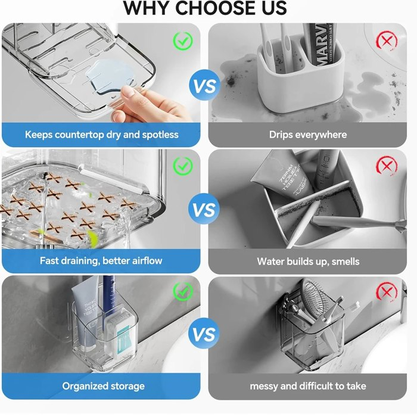

NICHT FREIGEGEBENER PRODUKTENTWURF
Keine eBay-Veröffentlichung. Fehlende Dokumente und Prüfpunkte bleiben offen. Versand und Gewinn sind nur Kalkulationswerte, keine Checkout-/Gewinnbestätigung.
AliExpress: 1005011904255432

🏠【Bohrfreier Wand-Zahnbürstenhalter】 – Klar, platzsparend & einfach zu installieren! Halten Sie Ihre Badezimmerablagen aufgeräumt und Ihre Zahnbürsten ordentlich organisiert mit diesem eleganten, transparenten Wandhalter! Mit starker Kleberückseite in Sekunden montiert – kein Bohren erforderlich. Perfekt zur Aufbewahrung von Zahnbürsten, Zahnpasta, Rasierern und mehr. Das kristallklare Design fügt sich nahtlos in jeden Badezimmerstil ein! 📦 PRODUKTDETAILS ✔ Material: Hochwertiger, klarer Kunststoff (langlebig & leicht zu reinigen!) ✔ Design: Organizer mit mehreren Fächern – Für Zahnbürsten, Zahnpasta, Rasierer und Kleinteile ✔ Installation: Starke Kleberückseite – Kein Bohren, kein Werkzeug, keine Wandbeschädigung! 🚫🔨 ✔ Farbe: Kristallklar (Passt zu jeder Badezimmereinrichtung!) ✔ Kapazität: Mehrere Steckplätze für den Familiengebrauch ✔ Merkmal: Wasserdicht & Rostfrei – Ideal für feuchte Badezimmer 💝 WARUM SIE ES LIEBEN WERDEN ✅ BOHRFREIE MONTAGE – Einfach abziehen, aufkleben und andrücken! Perfekt für Mieter und Hausbesitzer gleichermaßen! 🏠🔒 ✅ HÄLT ARBEITSPLÄTZE FREI – Schafft wertvollen Platz auf der Arbeitsfläche, indem vertikaler Wandraum genutzt wird! 📏✨ ✅ LÄSST WASSER LEICHT AB – Offenes Design ermöglicht natürliches Lufttrocknen der Zahnbürsten – keine eingeschlossene Feuchtigkeit oder Schimmel! 💧🦷 ✅ TRANSPARENT & SCHLANK – Kristallklares Material fügt sich nahtlos ein – sieht aus, als würde es an Ihrer Wand schweben! 👀💎 ✅ STARK & LANGLEBIG – Hält mehrere Zahnbürsten sicher, ohne herunterzufallen! 💪🛡️ ✅ EINFACH ZU REINIGEN – Einfach mit einem feuchten Tuch abwischen – bleibt strahlend sauber! 🧽✨ 🏡 PERFEKT FÜR • Familienbadezimmer 🏠 – Halten Sie die Zahnbürsten aller an einem Ort organisiert! • Kinderbadezimmer 👶 – Auf kindgerechter Höhe platzieren, damit sie leicht zu erreichen sind! • Gästetoiletten 🚪 – Eine ordentliche und einladende Note für Besucher! • Kleine Wohnungen & Studentenwohnheime 🏢 – Maximieren Sie mühelos begrenzten Platz auf der Arbeitsfläche! • Mietobjekte 📝 – Das bohrfreie Design bedeutet keine Sorgen um die Kaution! • Spülbereich 🍽️ – Bewahren Sie Spülbürsten oder kleine Utensilien ordentlich auf! • Geschenk für neue Hausbesitzer 🎁 – Ein praktisches und durchdachtes Einweihungsgeschenk! 🛍️ Beseitigen Sie Unordnung in Minuten – klicken Sie noch heute auf „In den Warenkorb“ für diesen bohrfreien Organizer! 🛒
| Ursprung | CN (Herkunft) |
|---|---|
| Material | Kunststoff |
| Ist ein Smart-Gerät | no |
| Choice | yes |
| SKU | Quelloptionen | Bestand | Quellpreis EUR | Versandprognose EUR | Verkaufspreisprognose EUR |
|---|---|---|---|---|---|
| 12000058623387620 | {"Farbe": "Grau"} | 15 | 5.09 | 1.99 | 25.99 |
| 12000056965691554 | {"Farbe": "Transparent"} | 35 | 4.69 | 1.99 | 25.99 |
Marke, Markenkompatibilität, Modellkompatibilität, Produktart